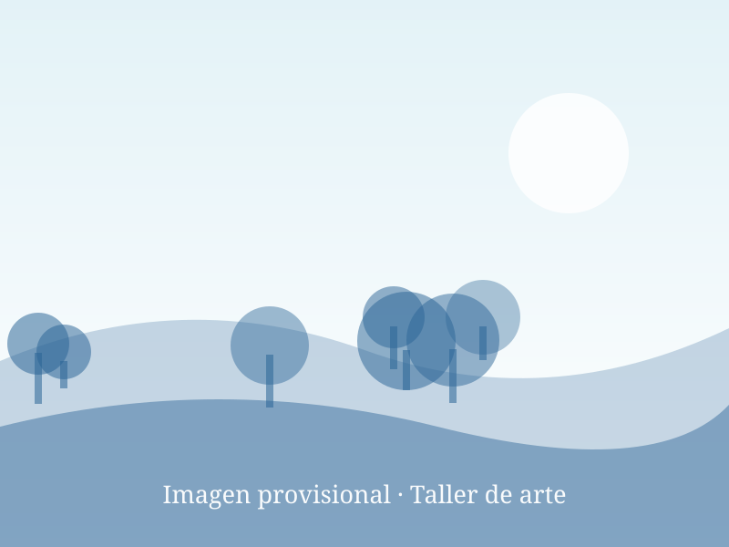
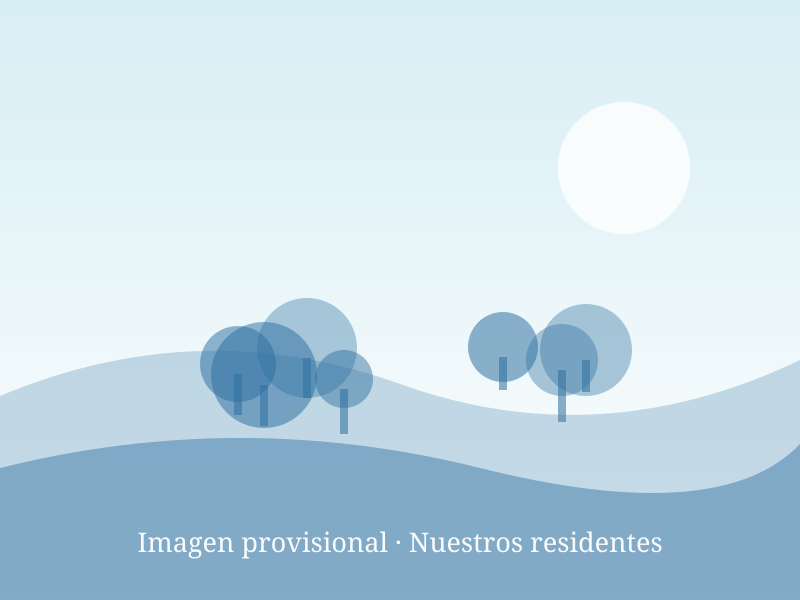
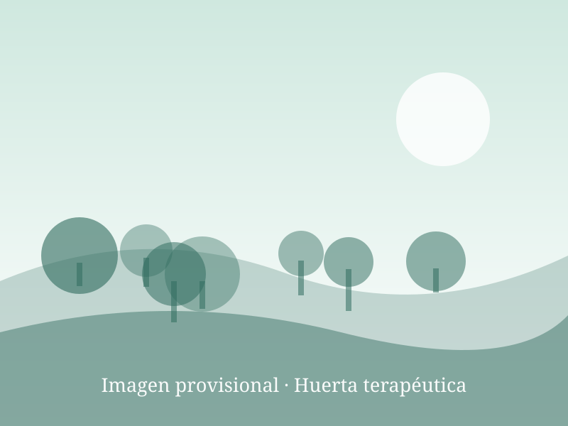
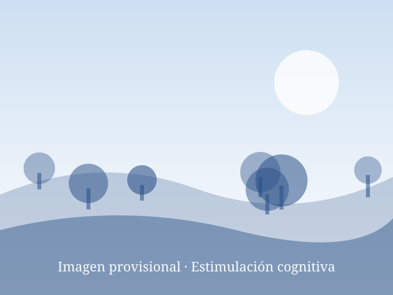
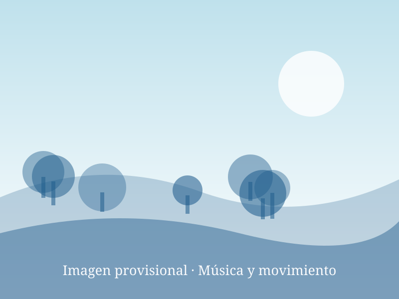
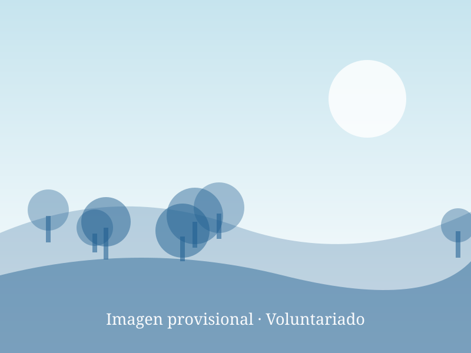

Arte y Expresión Plástica
Pintura, dibujo, cerámica y manualidades que estimulan la motricidad fina, la creatividad y la autoestima.
Raíces profundas en la solidaridad de Río Cuarto desde 1970.
Atención médica, de enfermería y humana las 24 horas, todos los días del año.
Un predio seguro, arbolado y totalmente accesible para el bienestar integral.
Obra gestionada por las Hermanas de Nuestra Señora de la Consolación.

El Pequeño Cottolengo Don Orione de Río Cuarto nació hacia el año 1970, impulsado por el espíritu misionero y caritativo del Padre Geniale Silvi (sacerdote de la congregación orionita), con el respaldo del Obispado de Río Cuarto y el trabajo incansable de una recordada comisión de vecinos benefactores de nuestra ciudad.
Tortosa (España): Santa María Rosa Molas funda la Congregación de Hermanas de Nuestra Señora de la Consolación.
Río Cuarto: la casa abre sus puertas como un refugio de dignidad para acoger, cuidar y acompañar a los más desprotegidos.
Hermanas de la Consolación: asumen la conducción, administración y cuidado integral del hogar.
Seguimos acompañando la vida con atención profesional, espiritualidad y ambiente de familia.
Desde el año 2001, la conducción, administración y cuidado integral del hogar están a cargo de la Congregación de Hermanas de Nuestra Señora de la Consolación.
La Congregación fue fundada en 1857 en Tortosa (España) por Santa María Rosa Molas y Vallvé, una mujer adelantada a su tiempo que consagró su vida a la atención de los enfermos, los ancianos, los niños y las personas en situación de exclusión.
Su misión fundacional inspira cada gesto cotidiano de nuestra comunidad en Río Cuarto y en todas las obras educativas, sanitarias y residenciales que la Congregación desarrolla en Argentina y el mundo.

«Prolongar la obra evangelizadora de Cristo entre los que padecen cualquier necesidad; con nuestro servicio les anunciaremos a Jesús como única y auténtica consolación».Misión fundacional · Santa María Rosa Molas
Brindar alojamiento permanente, asistencia sociosanitaria integral y rehabilitación a personas con discapacidad y adultos mayores en situación de vulnerabilidad, garantizando el pleno ejercicio de sus derechos, su inclusión comunitaria y el acompañamiento espiritual desde el carisma de la Consolación.
Ser una institución referente en Río Cuarto y la región por la excelencia humana, ética y profesional en el cuidado integral, manteniendo siempre las puertas abiertas a la solidaridad de la comunidad.
Cada residente es el centro de nuestra labor; respetamos su historia de vida, su singularidad, sus tiempos y sus derechos fundamentales.
Cuidamos desde la cercanía, la ternura y la escucha activa, construyendo un auténtico ambiente de hogar y familia.
Protocolos asistenciales interdisciplinarios, estricto cumplimiento de la normativa sociosanitaria vigente y absoluta transparencia administrativa.
Trabajo articulado entre el equipo profesional, las familias, el Estado, los voluntarios, los padrinos y las empresas de nuestra región.
Cada residente no es un número ni un paciente: es una persona única con nombre propio, historia, afectos y potencialidades. Acompañamos la vida cotidiana de personas adultas con discapacidad y adultos mayores, promoviendo su autonomía posible, su autodeterminación y su participación activa en la vida de la casa.

La calidad de nuestro cuidado nace de la unión entre la vocación de servicio y la formación técnica continua, con un equipo interdisciplinario comprometido con la calidez en el trato y la excelencia profesional.
Liderada por las Hermanas de Nuestra Señora de la Consolación junto a profesionales de gestión sociosanitaria, garantizando coherencia institucional, supervisión permanente y calidad asistencial.
Un profesional médico clínico y licenciados/auxiliares de enfermería que realizan seguimiento preventivo, control de medicación y atención de salud las 24 horas del día.
Especialistas en Trabajo Social, Psicología, Kinesiología, Terapia Ocupacional, Fonoaudiología y Nutrición, que diseñan Planes Individuales de Atención (PIA).
Personal capacitado en el acompañamiento diario (higiene, confort, alimentación y movilidad), brindando presencia afectuosa y contención constante.
Cocina, lavadero-ropería, mantenimiento edilicio y administración sostienen con dedicación el funcionamiento impecable de cada rincón del hogar.
Buscamos personas con vocación de servicio, empatía y compromiso ético.
Trabajá con nosotrosAbordamos a la persona en todas sus dimensiones a través de prestaciones integrales.
Residencia asistida con acompañamiento personalizado en todas las actividades de la vida diaria durante los 365 días del año.
Control clínico periódico, gestión farmacológica segura y enfermería las 24 horas.
Kinesiología motora y respiratoria, terapia ocupacional para el mantenimiento de habilidades cotidianas y estimulación fonoaudiológica, en sesiones individuales y grupales.
Menús diarios supervisados por licenciados en nutrición, elaborados en nuestra cocina y adaptados a cada requerimiento clínico (dietas blandas, hiposódicas, para diabéticos, suplementación).
Contención emocional a residentes, orientación a familias y articulación con obras sociales, organismos públicos y redes comunitarias.
Respeto profundo por la libertad de conciencia y fe de cada residente, con espacios de oración, sacramentos y acompañamiento espiritual.
Una vida plena necesita movimiento, creatividad, alegría y encuentro. Por eso desarrollamos un calendario semanal de actividades terapéuticas, recreativas y culturales.

Pintura, dibujo, cerámica y manualidades que estimulan la motricidad fina, la creatividad y la autoestima.

Contacto con la tierra y el cuidado de plantas, promoviendo la responsabilidad y el disfrute sensorial.

Juegos de mesa, lectura compartida, ejercicios de atención, lenguaje y reminiscencia guiados por profesionales.

Expresión corporal, ritmos y folclore que despiertan emociones positivas y fortalecen la socialización.
Cumpleaños mensuales, fechas patrias, peñas folclóricas y eventos especiales.
Salidas a espacios culturales, parques y eventos de Río Cuarto con acompañamiento profesional y voluntario.
Colegios, parroquias, grupos juveniles e instituciones comparten jornadas de juegos, música y amistad.
Misas en nuestra Capilla, adoración, Rosario y fiestas de San Luis Orione y Santa María Rosa Molas.
Un entorno natural privilegiado de más de 1,8 hectáreas, pensado arquitectónicamente para eliminar barreras, brindar seguridad y favorecer la tranquilidad.

Te invitamos a abrir las puertas de nuestro hogar desde donde estés: parques, pabellones, salas de talleres, comedor y capilla, diseñados con amor y criterios de accesibilidad universal.
Dormitorios luminosos, climatización frío/calor, baños adaptados, pisos antideslizantes y llamado individual.
Espacios amplios y cálidos para el encuentro diario, las comidas compartidas y el descanso.
Consultorios y talleres con materiales terapéuticos y mobiliario ergonómico.
Espacios verdes arbolados con senderos accesibles y galerías protegidas para todo el año.
Un espacio de recogimiento, paz y oración en el corazón del predio, abierto a todos.
Cocina industrial, lavadero, prevención de incendios, iluminación de emergencia y respaldo energético.
El sostenimiento diario de nuestra obra es posible gracias a la Providencia y al corazón generoso de personas, familias y empresas de Río Cuarto que eligen transformar realidades.
Es construir un vínculo de amor, cercanía y compromiso sostenido con la vida de nuestros residentes.
Más allá del aporte económico mensual —que nos permite garantizar una atención integral y profesional—, el padrinazgo significa presencia afectiva: acompañar su día a día y sostener su hogar en el tiempo.
Si deseás colaborar de manera puntual o apoyar proyectos específicos, podés hacerlo de diversas maneras:
Una contribución por única vez mediante transferencia bancaria oficial para el funcionamiento general o mejoras edilicias.
Alimentos no perecederos, pañales para adultos, higiene personal, ropa de cama y toallas, insumos de enfermería y materiales de talleres (consultanos las necesidades vigentes).
Participá y ayudanos a difundir nuestras campañas y eventos a beneficio.
Dejá una huella de amor perdurable con un legado testamentario a favor de la Congregación para el sostenimiento del Cottolengo.
Invitamos a empresas, comercios, productores agropecuarios e instituciones de Río Cuarto y la región a desarrollar acciones de Responsabilidad Social Empresaria (RSE) con impacto directo y transparente.
Accesibilidad, climatización, equipamiento médico o remodelación de pabellones, con reconocimiento en la memoria anual y placas de agradecimiento.
Contribuciones al sostenimiento operativo de los programas de salud y rehabilitación.
Alimentos, insumos de limpieza, mantenimiento técnico, logística o servicios profesionales.
Jornadas solidarias de trabajo en equipo junto a los colaboradores de tu empresa en el predio.
Nuestros voluntarios son un puente vivo entre la comunidad de Río Cuarto y nuestros residentes, sumando alegría, escucha y compañía bajo el carisma de la Consolación.
Sus tareas enriquecen la vida social, recreativa y espiritual de los residentes, complementando —y nunca reemplazando— la labor del equipo profesional y de enfermería.

En cumplimiento de la Ley Nacional N° 25.855 de Voluntariado Social y los protocolos de protección de derechos de la Congregación, toda persona que ingresa realiza una charla inicial de inducción y firma el Compromiso de Voluntariado Institucional, asumiendo:
Trato cálido, paciente y respetuoso hacia residentes, trabajadores y religiosas.
Reserva absoluta y compromiso de no tomar ni difundir fotos o videos sin autorización de la Dirección.
Cumplir días y horarios para dar previsibilidad y estabilidad afectiva.
Respeto por los protocolos de higiene y carácter solidario y no remunerado.
Tu aporte, tu tiempo o tu oración se transforman en cuidado, dignidad y consolación para quienes más lo necesitan.
Buscamos personas con vocación de servicio, empatía y compromiso ético para enfermería, cuidadores, profesionales de la salud, cocina, limpieza… Envianos tu CV indicando en el asunto el área de interés (ej. Enfermería / Cuidadores / Cocina).
Promovemos la formación de futuros profesionales en discapacidad y gerontología. Recibimos estudiantes exclusivamente a través de convenios marco vigentes con Universidades e Institutos de Educación Superior.
La admisión es evaluada de manera integral por el Equipo Técnico Interdisciplinario y la Dirección Congregacional, priorizando la vulnerabilidad social y la adecuación de nuestros apoyos a las necesidades de la persona.
Reafirmamos nuestro compromiso irrestricto con el buen trato, la integridad y la defensa de los derechos de nuestros residentes y trabajadores. Ponemos a disposición un canal confidencial para comunicar cualquier situación irregular, sugerencia de mejora o vulneración de derechos, garantizando su tratamiento reservado, serio y objetivo por parte de la Dirección Congregacional.
Un espacio amplio y accesible en un entorno verde y sereno, ideal para celebraciones, encuentros institucionales y jornadas. Con tu evento también colaborás con el sostenimiento de nuestra obra.
Consultar disponibilidad